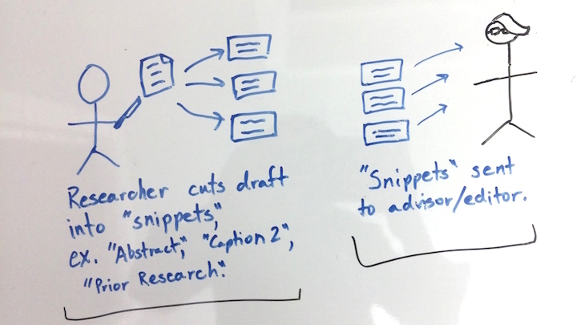
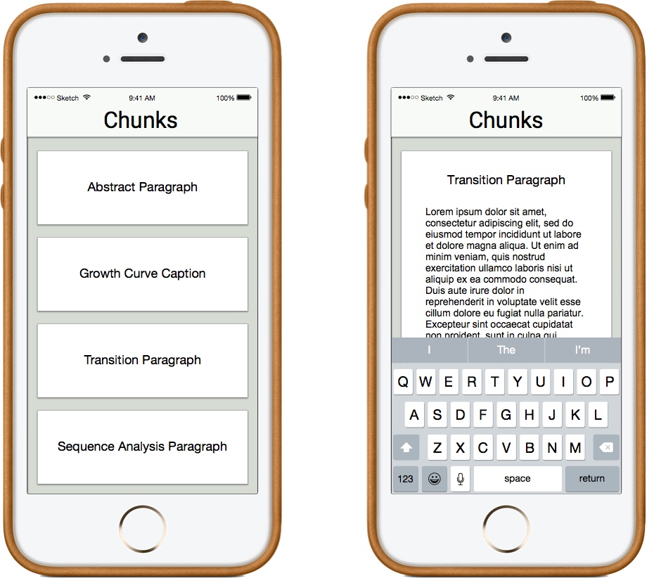

Collaboration App for ShareLaTeX

Intro
One of my favorite collaboration tools is ShareLaTeX, but it's limited to use on a desktop. In this project, I explored what functionality might translate well to mobile, and how that would affect workflows. In the end, I arrived at some wireframes for a ShareLaTeX Mobile App.
What is ShareLaTeX?
Sharelatex is a collaborative, cloud-based, LaTeX editing tool that allows multiple users to simultaneously edit the same LaTeX document. LaTeX is often used by people in academia to write research papers by combining figures, captions, and paragraphs of text.
Simplifying Functionality for Mobile
The first, simple approach was to simply take ShareLaTeX, break it into tabs or swipable screens, and move it onto a mobile app. However, in initial mock-ups, I realized that editing precise syntax would be cumbersome and not the best use of mobile. I then shifted the question to be: "What might people use a ShareLaTeX app for that they wouldn't use the desktop version for?"
Receiving Feedback is a Slow Process
Looking at the process of editing a research paper on ShareLaTeX or any platform, a pain point becomes clear: receiving edits takes time. This is because even if a writer wants feedback on a tiny change, the writer needs to send their entire draft over. Editing an entire draft requires setting aside a large chunk of time. Large chunks of time are difficult to find in a busy schedule, so this impedes the feedback process.
A whole draft is sent.

Setting aside a couple hours to edit is difficult.

Process with a Mobile App.
What if instead, a writer could send edits over in pieces that could easily fit into the editor’s busy schedule? This would be valuable for questions related to the clarity of sentences and paragraphs.
The mobile platform allows for editing all the time. The advisor/editor can edit on the train or while waiting for a pot to boil. Time that would normally be idle can now be used more productively.

Primary Feature
The process would start after the user edits a piece of a paper. The user selects it to be shared as a "chunk." This "chunk" then shows up on the mobile app for reviewers to see. All changes and comments are tracked, showing up in the desktop version.
The opening page is where all "chunks" can be accessed. When a chunk is selected it can be edited.
The other main feature of the mobile app is the ability to view captions and figures together to edit captions.

Navigation
The page at the center of navigation is the home page where a user can keep track of the work for which teammates are seeking feedback.
Alignment with Users' Values
Users value efficiency, productivity, and learning. This app offers would appeal to users through these values by helping them incorporate feedback more regularly. If users can do this, they can apply their learning and produce better writing in less time.
Future Work
The main criticism I have heard is that users might lose a sense of context when making edits. To remedy that, it may be helpful to build into each chunk a way to read the context of the piece around it or have specific requests for feedback from the writer.
However, to keep future work focused it's important to remember that the goal of this app is not to supplant the desktop version, but supplement it. It's for those times between first and final drafts where you need quick, easy feedback. Beyond editing LaTeX files, this breaking up of work could probably be applied to other kinds of writing as well.
Sustainable Cooking App
Out of the Classroom
This app came out of work done in a sustainable design course. The main finding of our research was that the majority of impact in a meal comes from the food. Knowing this, the target of our redesign became the process by which people decide what to cook. To achieve this, we came up with the idea for a mobile app that allows users to "remix" their recipes.
After the class ended, I decided to take our initial findings a step further by making them into mockups. To see the prior research, click here.

Before designing the app, I analyzed the process envisioned using a flow diagram. I used sticky notes to write out decision points and steps, making several iterations on the diagram. While creating this diagram, I saw where major decision were made that would require a change in screen. This helped me to divide up actions and see which actions should be grouped together on the same page.
Mockups
Following the rough draft of the task flow, I sketched mockups on paper. Satisfied that all suer goals could be completed, I translated these paper mockups into mockups in Balsamiq. Working in Balsamiq then helped me to think more about the spacing of features and how to arrange them in the iPhone screen. In the end, I organized the app into four main steps: Input, Remix, Cook and Review.
Input
People store and find recipes in a variety of ways, so the Input pages were designed to allow users to input recipes from these different sources. For example, if Passionate Patricia uses recipe cards, she can take a photo of the card and the app reads the text. If Get 'er Done Grant is unsure of what he wants but has an idea, he can search for recipes online.

Remix

People value different things in their meals, and the Remix page was designed to accommodate the values shared by Grant and Patricia. Users can choose between remixing their meal based on price, environmental impact, healthfulness, or preparation time.
Cook
The Cook Page allows users both do three things: Cook the recipe, save the recipe for later, and reject the current recipe to try a different remix theme.
Review

The review page allows users to give feedback on the flavor balance of the meal and rate the meal. If there are leftovers, the user can use them to make a new remix.
Future Work
These mockups are useful for initial idea exploration, and I believe all main functionalities have been captured. The next step would be to put them in front of users for feedback.
More specifically, I'd like to see users operate it one-handed while walking around a busy grocery store after work. How would the urgency of hunger, the exhaustion from work, and the chaos of other shoppers change the experience? This test may sound oddly specific, but I've found realistic tests reveal challenges and areas of opportunity that other tests do not.
Social Cooking App
Intro
In 2012 I took a class in Human-Computer Interaction and learned methods for iteratively developing computer applications. In this class, my team and I designed a tablet app that helps people organize cooking events with their friends. We worked through several stages: persona creation, scenario mapping, raw ideation, design development, and finally a click-through prototype.
Pain Points
Through interviews, we identified two pain points.
Team:
Our team had five people in it: two electrical-computer engineering majors(ECE), a political science student, a computer science major, and me. My role was a mix of user research, testing, wireframing, and coding.
Persona Creation
We started by learning about the values of this group, their familiarity with technology, the role of food in their life, and what they do for fun with friends. We placed portraits of the people we interviewed within several frameworks. Through this activity, we saw two groups emerge that were then captured in our personas: Abby and Corinne.
Corinne
Corinne generally eats at the cafeteria and cooks once a month, planning what to cook the day of with her friends.
Abby
Abby cooks frequently with much planning. She cooks once a week, and plans out what to cook each week, picking up the groceries each Sunday.
User Scenarios
Next, we looked at the various steps that our personas went through to reach the point of cooking with friends. We sketched these on notecards independently and shared them to bring out everyone's perspective while still coming to a common understanding of our users. Here are some examples of our user scenarios.
Corinne
Corinne is very organized and clear about what she wants, but is willing to accommodate her friend, Dierdre. What a great friend!
Abby
Abby sees cooking as a social experience. Unfortunately her schedule is pretty hectic, so she has difficulty finding time.
Task Flow analysis
For each persona, we mapped out the process by which they decide on recipes and make the food. Piecing these together, we had an overview of how different users go from thinking about food to cooking food. On the map to the right, steps that users take are marked with the users' corresponding color.
Legend
Comparables and inspiration
We were inspired by sites that allow people to easily find recipes in ways that support their usual decision-making process.
Recipe Sites
On many recipe sites, users view food in a gallery and click on images for recipes. This is a good process for users that decide what to cook based on desire.
SuperCook
In SuperCook, the user selects common ingredients, and a recipe with those ingredients emerges. This kind of tool is good for someone like Abby who has a limited budget and doesn't plan ahead.
Initial Ideation
My team started out with sketches. We would often make multiple sketches for similar functions to push ourselves to different solutions. Below are sketches we made to explore how users would reach different functions from the home page.
Paper Mockup
After trying different mockups on paper and testing them with users, we settled on a design that had two main actions on the home screen and three features that aided in organization.
Create event
Used to create events.
Friends List and Recipe Countertop
Used to access recipes and friends in the app.
Timeline
The timeline helps users like Abby track of events.
Overall Organization
The homepage is divided into action on the left and organization on the right. On the left of the homepage are buttons for creating events and matching with other users. On the right is the timeline and buttons to access the recipe countertop and friends list. After settling on this design, we moved to computer mockups.
Redesigns
Throughout our design process, we ran usability studies. After each round of codesigns, we would incorporate insights gained into the next iteration.
Below is such an example. The timeline is a tool on the homepage that allows users to see details of upcoming events. Our intent was that the user would simply click on each event to see the details. However, this was not clear to users. Instead of redesigning the buttons, we realized that a change in orientation of the timeline from horizontal to vertical would allow us to display the details up-front. For more examples of redesigns, you can visit the team webpage.
Higher-Fidelity Mockup
Since learning sketch, I've been returning to old projects to look at what a higher-fidelity mockup would look like. I've taken the home page from this project and cleaned it up. The "Create Event" button is green to emphasize that action. To improve legibility of the text, I made it white and tinted the food image.